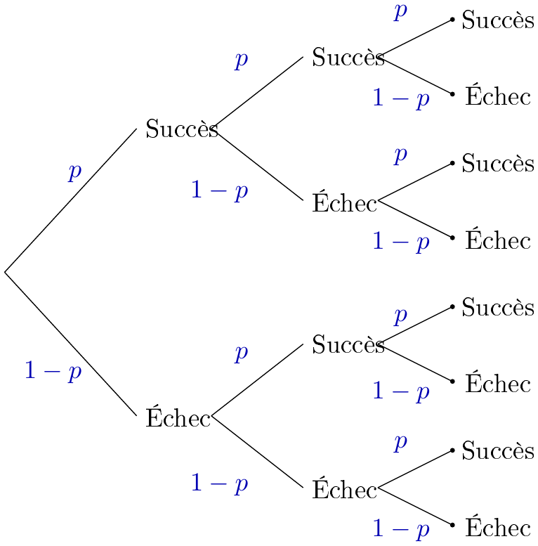
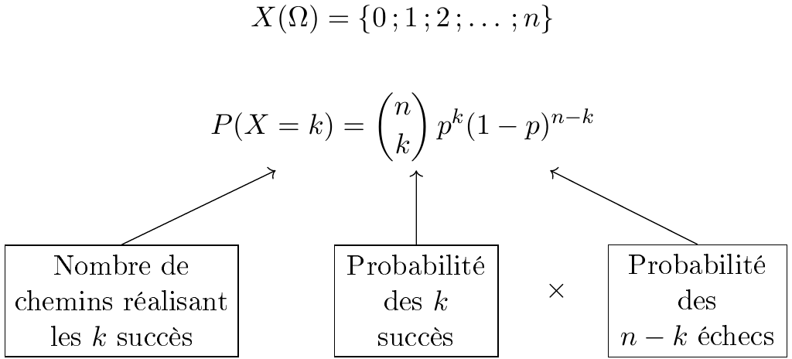
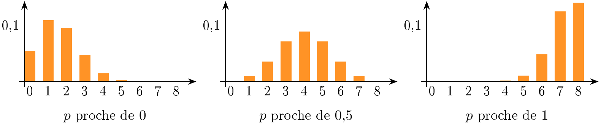

Chapitre VIII : Schéma de Bernoulli et loi binomiale
Terminale STMG · Chapitre 8 — Loi binomiale · cours de Frederik de Peyrelongue
I. Définition du schéma de Bernoulli
On considère une expérience aléatoire qui consiste à répéter $n$ fois une même épreuve à deux issues (deux issues : $S$ succès et $\overline{S}$ échec). On note $p=\prob(S)$ et $\prob(\overline{S})$.
Lorsque cette épreuve est répétée de manière identique et indépendante, on obtient un schéma de Bernoulli de paramètre $n$ et $p$.
À ce schéma de Bernoulli, on associe une variable aléatoire $X$ qui compte les succès.

I.1 Formule de calcul de $\prob(X=k)$
Avec pour $k$ succès parmi $n$ tirages, on a aussi $(n-k)$ échecs : il y a plusieurs chemins réalisant cet événement.
La probabilité sur une branche avec uniquement $k$ succès est de $p^{k}(1-p)^{n-k}$. Il faut ensuite dénombrer (compter) les branches avec uniquement $k$ succès.

II. Coefficients binomiaux
La notation $\dbinom{n}{k}$ se lit « $k$ parmi $n$ ». Ces nombres sont appelés coefficients binomiaux.
La formule de calcul n'est pas au programme. Ainsi, les probabilités des diverses valeurs de la variable aléatoire qui suit la loi binomiale $\mathcal{B}(n\,;p)$ sont obtenues grâce à la calculatrice ou avec un tableur.
- Si le nombre de répétitions $n$ dans le schéma de Bernoulli est peu important, alors on peut calculer les probabilités des diverses valeurs de la variable aléatoire « à la main ».
$\dbinom{n}{k}$ est le coefficient binomial qui compte le nombre de chemins pour avoir $k$ succès.
Le triangle de Pascal permet de calculer les coefficients binomiaux.
| $n$ | Triangle | $\binom{n}{0}$ | $\binom{n}{1}$ | $\binom{n}{2}$ | $\binom{n}{3}$ | $\binom{n}{4}$ | $\binom{n}{5}$ |
| $1$ | $1\quad 1$ | $1$ | $1$ | ||||
| $2$ | $1\quad 2\quad 1$ | $1$ | $2$ | $1$ | |||
| $3$ | $1\quad 3\quad 3\quad 1$ | $1$ | $3$ | $3$ | $1$ | ||
| $4$ | $1\quad 4\quad 6\quad 4\quad 1$ | $1$ | $4$ | $6$ | $4$ | $1$ | |
| $5$ | $1\quad 5\quad 10\quad 10\quad 5\quad 1$ | $1$ | $5$ | $10$ | $10$ | $5$ | $1$ |
III. La loi binomiale
La variable aléatoire $X$ qui compte les succès dans un schéma de Bernoulli de paramètre $n$ et $p$ suit la loi binomiale de paramètres $n$ et $p$, notée $\mathcal{B}(n\,;p)$.
La variable aléatoire $X$ prend des valeurs entières entre $0$ et $n$, et
$n=5$, $k=3$ et $p=0{,}1$ :
On considère une urne opaque dans laquelle ont été placées une boule verte et deux boules bleues, toutes indiscernables au toucher. On prélève une boule dans cette urne, on note sa couleur puis on remet la boule dans l'urne. On répète dix fois l'expérience et on note $X$ la variable aléatoire qui compte le nombre de boules bleues obtenu à la fin des dix tirages.
Le tirage de chaque boule est une épreuve de Bernoulli (succès : « Boule est bleue »). Comme les dix tirages sont avec remise, les tirages sont identiques et indépendants.
Ce tirage est donc un schéma de Bernoulli que l'on répète $10$ fois de manière identique et indépendante. La variable aléatoire $X$ qui compte les succès suit une loi binomiale de paramètres $n=10$ et $p=\dfrac{2}{3}$.
Donc
III.1 Représentation graphique de la loi binomiale
La représentation de la distribution correspondant à une loi binomiale dépend du paramètre $p$ : plus $p$ est proche de $0$, plus la probabilité d'obtenir un succès sera faible ; si $p$ devient proche de $1$, la probabilité d'obtenir un grand nombre de succès sera élevée.
La hauteur de chaque bâton au niveau de l'abscisse $k$ correspond à $\prob(X=k)$.

III.2 Espérance, variance et écart-type
Soient $n$ un entier naturel strictement positif et $p$ un nombre réel de l'intervalle $[0\,;1]$. On note $X$ une variable aléatoire qui suit la loi binomiale de paramètres $n$ et $p$.
- L'espérance de $X$ est $E(X)=np$.
- La variance de $X$ est $V(X)=np(1-p)$.
- L'écart-type de $X$ est $\sigma(X)=\sqrt{np(1-p)}$.
On a utilisé la formule du binôme de Newton pour la dernière somme, et l'égalité $k\dbinom{n}{k}=n\dbinom{n-1}{k-1}$.
III.3 Correction type
On considère une situation où la probabilité de réussir un entretien d'embauche est égale à $0{,}12$. On interroge dix candidats et on suppose leur embauche indépendante de celle des autres candidats. On note $X$ la variable aléatoire égale au nombre de candidats qui ont réussi leur entretien parmi les dix.
- Calculer $E(X)$ et donner une interprétation dans le contexte de l'exercice.
- Calculer $V(X)$ et $\sigma(X)$.
Correction.
Interroger un candidat est une épreuve de Bernoulli de succès « réussir l'entretien » de probabilité $p=0{,}12$, que l'on répète $n=10$ fois de manière identique et indépendante.
La variable aléatoire $X$ qui compte les succès dans ce schéma de Bernoulli suit donc la loi binomiale de paramètres $n=10$ et $p=0{,}12$ :
1) $X$ suit la loi binomiale :
Sur un grand nombre de séances de recrutement de $10$ personnes, il y a en moyenne $1{,}2$ recrutement.
2)